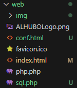
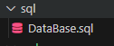
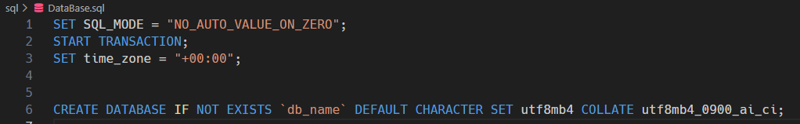
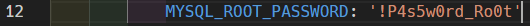
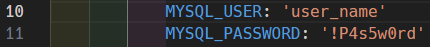
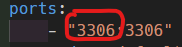

DesarrolloWebDocker
¿Que es? 😏
💻DesarrolloWebDocker es un repositorio que tiene lo más básico 💿 para empezar con el desarrollo web 📈. 📟 No hay necesidad de configurar nada para empezar a programar 😁.
Tambien es posible modificar algunas cosas para hacerlo más personal 🔧.
Default 😒
Por defualt la base de datos se llamará: [ db_name ].
Contraseña root: [ !P4s5w0rd_Ro0t ]
Nombre de usuario: [ user_name ]
contraseña: [ !P4s5w0rd ]
Personalizar📝
📋 Pagina Web 📁
Todo el contenido del sitio web tiene que estar dentro del directorio web.

🔥 Inicialmente se tiene un sitio de prueba para verificar que todo lo instalado por docker compose funcione correctamente. 😏 Estos archivos deberan ser sustituidos por tu propio sitio web💾.
Base de datos inicial📑
Si se desea tener una base de datos inicial o cargar una ya existente. Solo basta con ingresar el archivo .sql en la carpeta sql y docker compose se encargará automáticamente de configurar todo.

En este caso el Archivo DataBase.sql es el que se cargará por default. Actualmente solo crea una base de datos con el nombre [ db_name ]

Si se desea tener la base de datos vacía puede solo cambiar el nombre default por alguno personalizado.
Usuarios de la base de datos 👥
Para cambiar los valores por default de la base de datos abre el archivo compose y edita:
Contraseña root:
Cambia [ !P4s5w0rd_Ro0t ] por tu contraseña.

Usuario:
Cambia [ user_name ] por tu nombre de usuario personal.
Cambia [ !P4s5w0rd ] por tu contraseña de usuario personal.

Docker Compose 🔐
Puedes editar libremente el archivo [ docker-compose.yml ] para cambiar el nombre de los directioios o agregar nueva configuracion.
Si no le sabe no le mueva 😗.
Posibles Errores 💀 y su Solución 🤓
No se pudo iniciar un servicio 🤕
Normalmente esto ocurre porque ya existe otro servicio corriendo por el puerto especificado en docker compose.
La posible solución es cambiar el puerto del host.
En el archivo docker compose busca la sección de port y edita el numero que esta antes de los dos puntos :

Elige un numero entre el 49,152 y 100,000
ALHUBO 😁
¿Quien soy? 😋
Mi nombre es Alejandro Huerta Bolaños. Hice este repositorio para facilitar el inicio al desarrollo web.